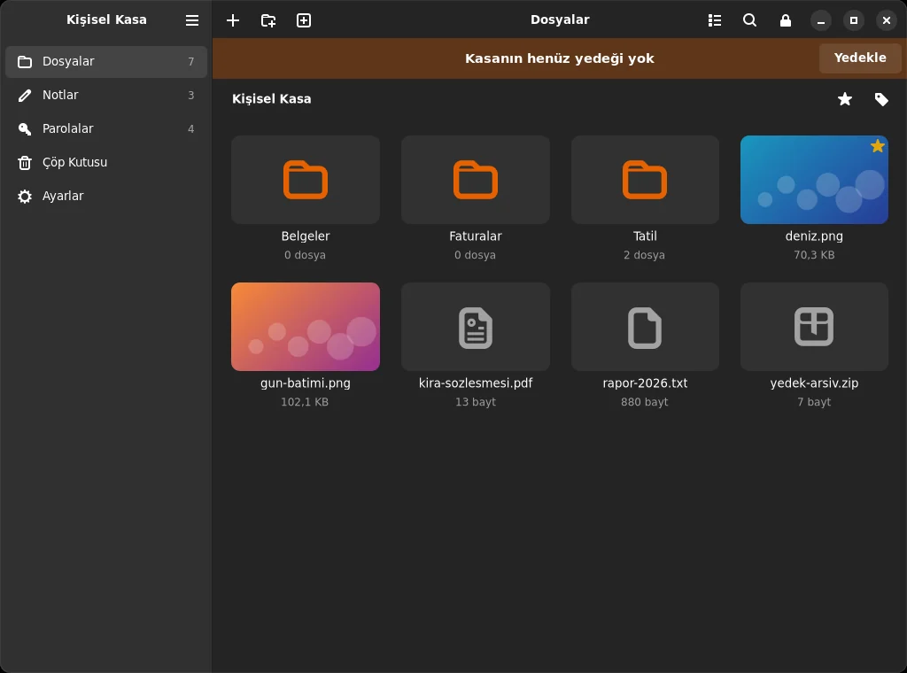

Dosyalar
Sürükle-bırak, klasör yapısı korunur. Etiketler, favoriler, arama. Görseller ve metinler uygulama içinde önizlenir; macOS'ta videolar diske şifresiz kopya yazmadan oynatılır.

01 — Kapıdan içeri
Bir dosyayı Mahzen'e bıraktığın an, bu bilgisayarda şifrelenir. Diskte yalnızca rastgele adlı, rastgele görünen baytlar kalır. Dosya adları, klasörler, notlar ve parolalar dahil.
Sen görürsün
pasaport-taramasi.pdf
Kurtarma ifadesi
banka@ornek.com
Diskte kalan
Mahzen Kasası/ ├── vault.json tuz, Argon2id ayarı, sarılmış anahtar ├── index.enc ├── blobs/ │ ├── 3f/.mhz │ ├── a9/.mhz │ └── d2/.mhz └── thumbs/.mhz
Parolan Argon2id ile 1 GB bellek harcanarak anahtara dönüşür. Ekran kartlarıyla toplu tahmin pahalılaşır.
Rastgele 256 bitlik ana anahtardan HKDF ile her dosya, küçük resim ve dizin için ayrı anahtar türetilir.
Dosyalar 1 MB'lık parçalar halinde AES-256-GCM ile şifrelenir. Değiştirilen, yer değiştirilen ya da kesilen parça reddedilir.
02 — Mahzenin içi
Sürükle-bırak, klasör yapısı korunur. Etiketler, favoriler, arama. Görseller ve metinler uygulama içinde önizlenir; macOS'ta videolar diske şifresiz kopya yazmadan oynatılır.
Renkli, sabitlenebilir notlar. Kurtarma ifadeleri, pasaport numaraları, gizli planlar.
Hesap, kart, Wi-Fi, sunucu. Parola üretici, güç ölçer; kopyalanan parola 30 sn sonra panodan silinir.
Hareketsizlikte, uykuda, ekran kilitlenince ve SSD çıkarıldığı an.
İstersen kasa, parolanın yanında yalnızca senin bilgisayarında duran rastgele bir dosyayı da ister. Kasada bunun izi bile yoktur.
Tek tıkla artımlı yedek. Bütünlük taraması her dosyayı çözerek doğrular, bozuk olanı yedekten geri getirir.
03 — Son savunma hattı
İstersen Mahzen, art arda belirli sayıda yanlış parola girildiğinde kendi anahtarlarını yok eder. Ana anahtarı taşıyan dosya rastgele baytlarla ezilip silinir; kasadaki her şey doğru parolayla bile bir daha açılamaz.
04 — Bir kasa, iki dünya
Kasa biçimi tek ve ortak. Mac'te eklediğin dosya Linux'ta, Linux'ta yazdığın not Mac'te görünür.


05 — Açık konuşalım
Bağımsız denetimden geçmedi. Yapı taşları (CryptoKit, OpenSSL, Argon2 referans uygulaması) denetlenmiş kütüphanelerdir; onları birleştiren kod değil. Bulduğun açığı duymak isterim.
Güvenlik parolana bağlı. Rastgele seçilmiş 5+ kelime ya da 12+ rastgele karakter öner. Zayıf bir parolayı hiçbir algoritma kurtaramaz.
Parola giderse veri gider. Kurtarma yok, arka kapı yok. Anahtar dosyası kullanıyorsan onun da yedeğini al.
Boyutlar görünür. Kasa klasörüne bakan biri dosyaların sayısını ve boyutlarını görebilir; adlarını ve içeriklerini göremez.
06 — Mahzene in
$ git clone https://github.com/efefdev/Mahzen.git
$ cd Mahzen
$ ./scripts/build-app.sh # dist/Mahzen.appUygulamayı SSD'nin köküne kopyala; kasa yanında Mahzen Kasası olarak oluşur.
$ git clone https://github.com/efefdev/Mahzen.git
$ cd Mahzen/linux
$ ./install.sh # bağımlılıklar + uygulamaKurmadan, diskten çalıştırmak için: ./mahzen.sh · Sunucular için: mahzen-cli
Başka hiç kimsede değil. Ne bizde, ne bir bulutta, ne de bir sunucuda.